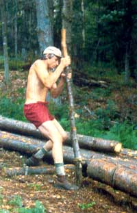

In the search for efficiency, we often overlook the less tangible rewards of a do-it-yourself project.
Last June, after spending several months of my spare time cutting and limbing balsam and fir trees with a 42" bow saw and a double-bladed ax, I was able to sit atop my hillside property and-with no small feeling of satisfaction-view the 100 logs that I'd need to build my home. A full third of those timbers rested within a mere 100 feet of my home-site. My satisfaction began to turn to apprehension, though, as I forced myself to face the fact that an equal portion of the logs was stacked some 200 feet away, at the bottom of a 20° slope . . . while the rest of my home-to-be (stacked far enough away to resemble a pile of jackstraws from where I sat) was a full 100 yards beyond the bottom of that hill.
In the past I had often hand-carried or dragged small logs, tipi poles, and the like from one site to another. But these timbers were each about 22 feet long and averaged 10 inches in diameter. So I made arrangements with a local logger to bring his horse and skid to move the logs to the site, offering to trade him two hours of my labor for every hour he and his horse spent getting the felled trees moved.
Though that gentleman was agreeable to my proposed swap, it would be-he said-a week or so before he'd have time to do the job. So I decided to use that delay in an attempt to move at least some of the logs to the site myself (and maybe, while doing so, regain a little of the sense of accomplishment I'd felt after felling and branching the trees by hand).
In order to tackle that imposing task, I borrowed an idea from a friend, Jon Denner, who-while building a 25' X 25' log cabin in Vermont-had moved all of the logs without a horse, skidder, or tractor. Jon managed to do it with "a little help from his friends" . . . and from a crude levering device that he used to "row" the logs out of the woods.
Following the hints the Vermonter had passed along, I duplicated his tool from a five-foot length of 3"-diameter birch and eight feet of 5/8" hemp rope. First, using my ax, I sharpened the thicker end of the stick... and then tied the rope to the birch pole at a point approximately 15 inches above the top of that ax-formed taper.
I must admit that the appearance of this simple tool wasn't exactly confidence-inspiring. Still, I went ahead and used a clove hitch to tie the free end of the hemp about one foot in from the end of the log closest to my home-site. I then stabbed the pointed end of the stick into the ground and pulled back on the top. Much to my surprise, this technique allowed me to propel that log over a distance of 50 feet in a relatively short time without damaging my back, arms, legs, or morale. Inspired by that success, I decided to improve on the technique by setting up a runway of 4' -long log-end skids-held in place by driven pegs-before getting back to work.
As that day progressed, I found myself thinking of the stick-and-string contraption as a "galley slaver" because of the rowing motion I used to inch the logs along the railroad of skids. However, I didn't feel I was slaving. In fact, I found that I rather enjoyed the experience of hauling my own logs... for my own house ... at my own pace . . . across my own land . . . and for my own reasons!
And that's why, after two weeks without hearing anything more from the logger, I decided to "go for it"... to try to bring all of the logs to the site by using the galley-slaver-and-skid technique. The first group of timbers-those within 100 feet of the site-were moved into place without incident. Once I began inching the second group up the hillside, though, I quickly developed a feel for the limitations of my low-tech tool. Smaller logs didn't present much of a problem; I was able to move them along in slow, but relatively easy, 20-inch bites. But the bigger timbers were another story altogether. Often I'd jam the point of my lever into the ground, lean back with a grunt of effort, and then sit down very suddenly as the point of the galley slaver tore itself through the earth without moving the log an inch.
Still, the job wasn't impossible. After learning to really ram that stick down into the soil, I began to make progress with even the most massive timbers. Within a week of working three or four hours each afternoon, I'd successfully inched the second group of logs up the 200-foot slope to my house site.
The final 33 trees were, of course, still down the hill and another 100 yards back in the woods. I didn't have enough skid logs to run a railway that full distance, so I found myself leapfrogging the rollers . . . moving those I'd already passed over up ahead of the log being hauled. It was (appropriately enough) almost Labor Day when I finished the job... and, with the exception of one three-week interruption, I'd been at the task for about four hours a day, five or six days a week.
Altogether, the time I spent leapfrogging, rowing, inching, pondering, coaxing, and cajoling those logs to my homesite was about 85 hours. Now, if the logger and his horse had shown up, we could probably have gotten the whole job done in two eight-hour days. Then, after completing my two-for-one labor exchange with that gentleman, I'd have had a total of 48 hours invested in the task . . . about half as much time as I'd consumed doing the job by myself.
Based on that fact alone, you could say that my galley-slaver logging system was a triumph of inefficiency. And there were times when I certainly would have agreed with that analysis-for instance, when the gnats were thunderclouding around my eyes or when my lever tore a trench in the earth and let a log slip backward a few precious feet. But, more often than not, I'd find myself thinking that efficiency must be like happiness, which someone once said "cannot be achieved in less than a complete lifetime." That sage meant, I think, that contentment isn't the result of a few isolated events, but is-instead-the interweaving of the rhythms and events that make up a person's entire life.
And that bit of philosophy let me see, during the times when the job was proceeding in small but satisfying increments, that my struggle with the galley slaver might well have been very efficient in teaching me lessons about perseverance, confidence, ingenuity, and self-reliance . . . lessons that I'll be able to profit from in the future whenever apprehension threatens to overshadow personal satisfaction.
|
 |
|
|